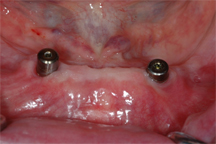
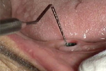
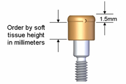
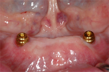
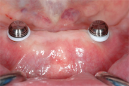
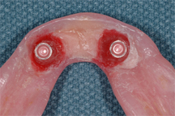

Procedure
- Verify fit and occlusion of dentures
- Remove healing abutments with proper wrench (Fig 01)

Fig 01
- Measure height of tissue cuff above implant fixture, record measurement of highest cuff for each fixture (Fig 02, Fig 03)

Fig 02

Fig 03
- Select Locator® Abutment for tissue height recorded.
- Place Locator® Abutment and hand tighten. Check tissue height in relation to retentive depression on the abutment.
- Once tissue height is verified, tighten abutment to 30Ncm with the abutment torque wrench. (Fig 04)

Fig 04
- Place attachment coping on each Locator abutment. Use the black processing insert during this procedure. (Fig 05)

Fig 05
- Using Fit Checker VPS, Disclosing Wax or Pressure Indicating Paste, determine that clearance exists around the coping and denture.
- Place the opposing prosthesis.
- After verifying space exists around coping and no changes to the occlusal pattern have occurred due to interferences from the coping and seating of the denture the pick-up procedure may be accomplished.
- Place the white o-ring blockout mechanism on each abutment and evaluate if they drape to make tissue contact around the abutment. If space exists under the o-ring, rubber dam will need to be used to create a larger blockout mechanism to prevent CG Pattern resin from flowing under the attachment coping and binding around the Locator® Abutment. (Fig 05)
- Place monomer and polymer of the CG Pattern resin in separate disposable medicine cups. Using a disposable brush dampen the acrylic surface of the depressions that will house the copings with monomer.
- Bead/Brush the monomer and polymer to fill each depression about 75% full. Be careful to alternate between both depressions so the material will not polymerize too rapidly during the addition procedure.
- Seat the denture and position properly in the patient’s mouth and have the patient gently close into the proper occlusal postion to stabilize the denture during the polymerization process. Polymerization requires 5-7 minutes. Do not disturb the denture during this time.
- After polymerization remove the overdenture and trim excess CG Pattern Resin surrounding the attachment copings in the denture base to eliminate flash and imperfections. Do not remove the black processing inserts until after trimming is competed.
- Remove the processing insert from the attachment coping using the Locator Core Tool. Replace the processing insert with the lightest strength attachment insert (Blue Color) using the Core tool and press until it snaps into place in the attachment coping. (Fig 06)

Fig 06
- Insert and fully seat the denture until the unit snaps into place. Check the intaglio surface for pressure using Pressure Indicating Paste and double check to make sure the occlusion has not changed.
- After the attachments have warmed to body temperature check the retention of the prosthesis. Replace the attachment inserts with heavier strength inserts if needed.
- Instruct the patient in placement and removal of the prosthesis and have the patient demonstrate that they can insert and remove the prosthesis correctly.
|